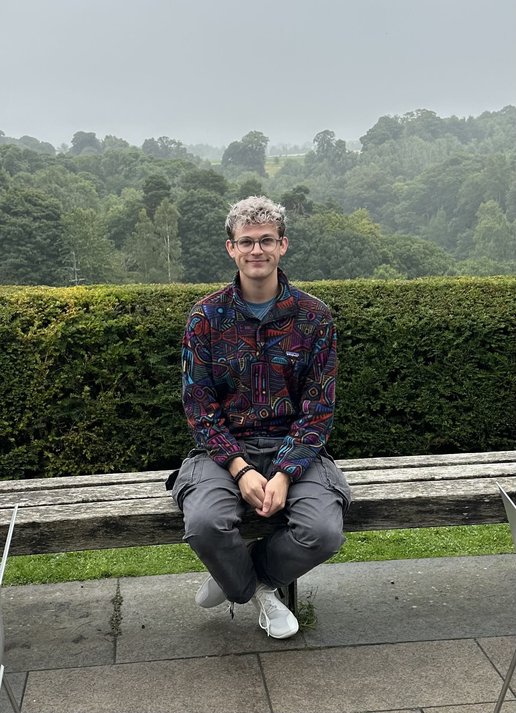

Alexander Vonderschmidt
Postdoctoral Researcher · Tufts University

I am a postdoctoral researcher at the Food is Medicine Institute, within the Friedman School of Nutrition Science and Policy at Tufts University.
My work focuses on population health modeling, diet–disease relationships, and evaluating the health and cost impacts of Food is Medicine interventions at national and state levels.